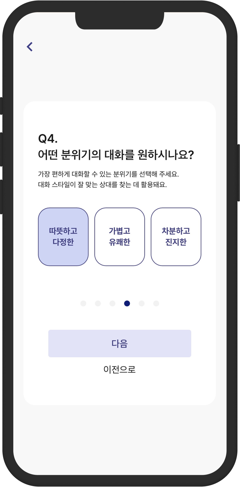
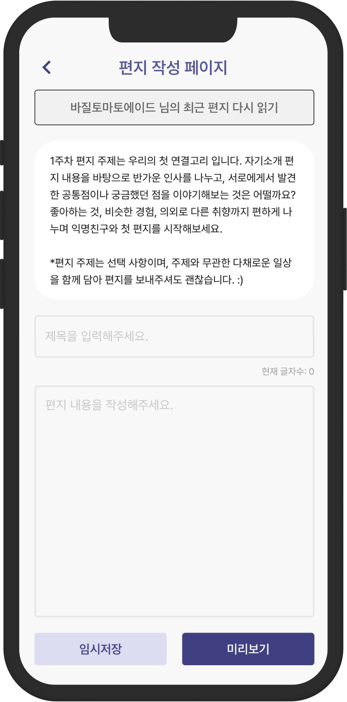
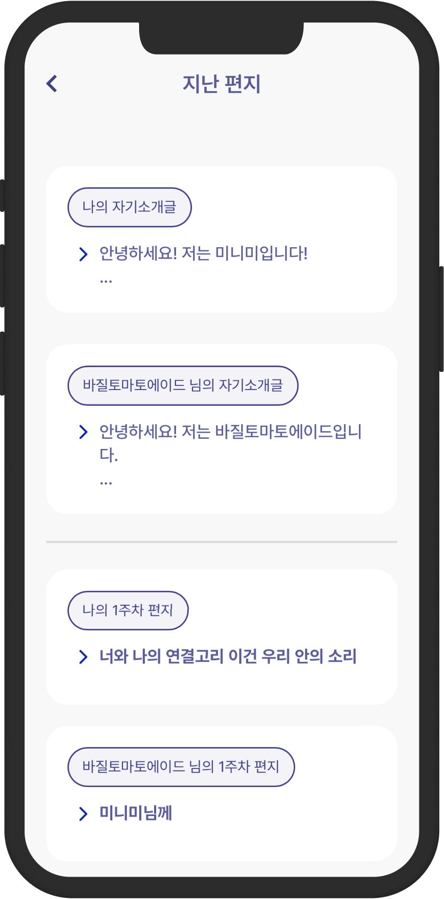

주 1회, 가벼운 안부가 아니라 진짜 마음을 나누는 익명 우편함
매주 한 통, 나와 비슷한 고민을 가진 낯선 사람과 익명으로 편지를 주고받습니다.
서비스 소개
두리서기는 처음 연결되는 순간부터, 매주 편지를 쓰는 시간과 마지막 회고까지 천천히 이어지는 교류의 흐름을 설계합니다.

나에게 맞는 분위기,
내가 직접 고릅니다
랜덤 매칭이 아닙니다. 대화 분위기·관심 주제·연령대를 기반으로 처음부터 잘 맞는 사람과 연결됩니다.
- 대화 분위기 직접 선택
- 성별·연령대·주제 기반 다차원 매칭

매주 하나의 주제로,
충분히 생각하고 씁니다
매주 새로운 주제가 교류를 이끌어 줍니다. 즉각 응답 압박 없이, 나만의 속도로.
- 큐레이션된 주간 주제 — 평일의 행복, 요즘 행복한 것 등
- 상대 편지 먼저 읽고, 여유롭게 답장 작성

4주간 쌓인 이야기를
함께 돌아봅니다
교류가 끝나면 주고받은 편지 전체가 리캡으로 완성됩니다. 기억으로 남길지, 다음 교류로 이어갈지, 선택은 당신의 것.
- 쌓인 페이지 수와 편지 모음을 한눈에
- 상대가 전하는 솔직한 한 마디
이미 우편함을
열어본 사람들.
부담 없는 거리에서 시작한 대화가, 어떤 순간에는 하루를 버티는 작은 기준이 됩니다.
부담이 커지기 전에,
멈출 수 있어요.
두리서기는 천천히 이어지는 연결을 만들고, 속도와 거리는 스스로 정할 수 있게 돕습니다.
관계를 이어갈지 멈출지 정해진 시점에 선택할 수 있어요.
프로필 사진과 실명 없이 별명으로만 교류해요.
불편한 대화는 즉시 멈추고 운영팀에 알릴 수 있어요.
관심사와 대화 속도를 반영해 무리한 연결을 줄여요.
지금 바로 신청하고,
첫 번째 편지를 받아보세요.
프로필 사진도, 본명도 필요 없습니다. 익명으로 시작해 천천히 이어지는 대화를 경험해보세요.